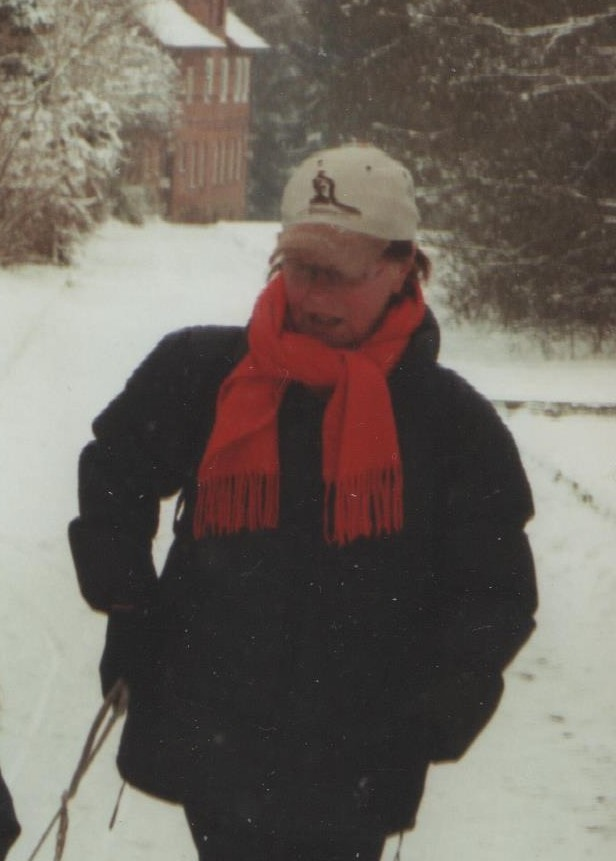

Rosemarie Metzler
Geboren: 1946
Gestorben: 2022
Rosi ist im April gestorben und hatte ein sehr erfülltes Leben. Sie hat in Essen im Schölerpad
zusammen mit ihrem Mann 2 Kinder großgezogen. Sie liebte ihr Haus und ihren alten Mercedes und die Erdbeeren
in ihrem Garten. Im Frühjahr erntete sie die Erdbeeren um marmelade für das ganze Jahr zu kochen. Ihre lieblingszeit
war Weihnachten.
Rosi wird schmerzlich vermisst und bleibt noch lange in unseren Erinnerungen am Leben.